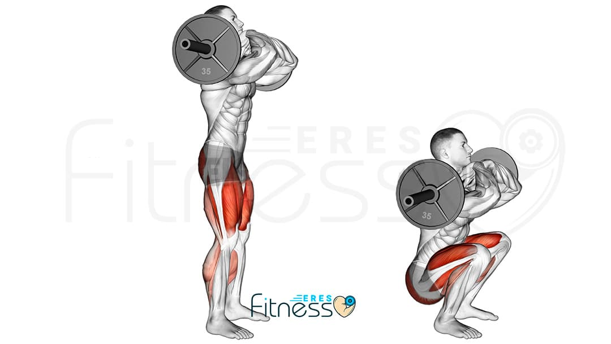

Sentadillas con barra
Si te has animado a practicar las sentadillas con barra, debes tener bien presente su técnica para evitar lesiones, minimizar daños y, sobre todo, ejercitar correctamente piernas y glúteos. En primer lugar, debes conocer la posición baja del ejercicio:
- Separa levemente tus piernas, asegurándote que están al mismo nivel que tus hombros
- La planta de los pies debe estar unos 30 grados hacia afuera.
- En esta posición, baja tu cuerpo como si estuvieras sentado en una silla.
- ¡Importante! Vigila que las rodillas no sobresalgan más que la punta de los pies, ya que podrías lesionarte

Volver